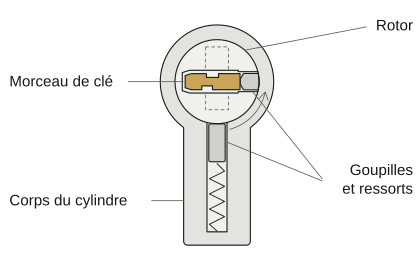

- Accueil
- Guides de serrurerie
- Clé cassée : que faire
Clé cassée dans la serrure : que faire et qui paie
Clé cassée dans la serrure : ne tournez plus et ne glissez rien dedans, pas même votre double. Gardez la tête de la clé, qui porte souvent son numéro.
Si la porte est ouverte et ferme de l’intérieur, un rendez-vous de jour suffit. Vous êtes dehors ou elle ne ferme plus ? Appelez un serrurier.
Où le morceau est-il resté ?
Il est dans le cylindre, la pièce où l’on glisse la clé. Au centre, une partie ronde appelée rotor tourne avec elle.
Sous lui, de petites goupilles poussées par des ressorts le bloquent tant que la bonne clé ne les a pas alignées. Ce sont elles qui serrent le morceau.
Le bout dépasse : il reste une prise. Il est à ras de l’entrée : plus rien à saisir. Il est au fond : il faut des outils d’extraction.
Si la clé a cassé pendant que vous tourniez, le rotor est resté de travers. Le morceau ne sortira pas tant qu’on ne l’a pas ramené droit.

Ce que vous pouvez faire sans rien aggraver
- Gardez les deux morceaux. La tête porte souvent le numéro de la clé et la cassure montre où elle a cédé.
- Porte ouverte : si elle ferme de l’intérieur par un verrou ou un bouton, fermez-la et attendez le jour. Sinon, il faudra quelqu’un ce soir.
- Cherchez la carte de propriété, remise avec certains cylindres de sécurité. On ne peut pas toujours faire reproduire la clé sans elle.
- Un bout dépasse nettement ? Vous pouvez essayer une fois de le tirer bien droit à la main sans tourner. Arrêtez à la première résistance.
- Si vous louez, prévenez l’agence ou le propriétaire avant de faire changer quoi que ce soit.
Ce qui bloque la serrure pour de bon
- La colle sur une allumette. Si une goutte coule entre le rotor et les goupilles, le cylindre ne tournera plus : il faudra le changer.
- La pince à épiler, l’aiguille ou l’épingle dans un morceau à ras. On l’enfonce plus souvent qu’on ne le sort.
- L’aimant. La plupart des clés sont en laiton ou en maillechort, des métaux qu’un aimant n’attire pas.
- Le double glissé dans la serrure pour pousser. Il repousse le morceau au fond et peut se coincer à son tour.
- Démonter le cylindre. Il ne sort que si sa came est droite : c’est la pièce qui pousse les pênes, les tiges qui ferment la porte. On n’y arrive pas sans clé.
- Percer. Le perçage détruit le cylindre, alors qu’une extraction le laisse souvent en état.
Locataire, propriétaire, assurance : qui paie ?
Si vous louez, remplacer une clé abîmée est une réparation locative : elle est en principe à votre charge.
Le décret du 26 août 1987 range parmi elles le « remplacement de petites pièces ainsi que des clés égarées ou détériorées ».
Pour le cylindre, c’est moins simple. La loi du 6 juillet 1989 laisse les menues réparations au locataire et le reste au propriétaire (articles 6 et 7).
La vétusté (l’usure par les années) n’est pas à la charge du locataire. Une malfaçon ou un vice, un cas fortuit ou la force majeure non plus.
Un cylindre usé qui a fini par casser la clé peut donc être à la charge du propriétaire. Prévenez-le avant de le faire changer.
Gardez le devis, la facture et l’ancien cylindre.
Si vous êtes propriétaire, la dépense est pour vous sauf si votre assurance habitation la couvre.
Certains contrats ont en option une garantie « dépannage d’urgence à domicile » avec franchise et plafond : appelez l’assureur avant le serrurier.
Quand appeler et ce qu’il faut dire
Si quelqu’un est enfermé à l’intérieur sans pouvoir sortir seul (un enfant ou une personne fragile), appelez d’abord le 18 ou le 112.
Appelez si vous êtes dehors, si la porte ne ferme plus ou si le morceau est à ras ou au fond. Dites où la clé a cassé et donnez votre commune.
Le serrurier doit vous communiquer ses prix « préalablement à la conclusion d’un contrat » (arrêté du 24 janvier 2017, article 2).
Cela vaut pour le taux horaire et les forfaits, le déplacement et le devis gratuit ou payant.
Sur place, il vous remet un devis écrit avant de commencer (même arrêté, article 4).
Clé cassée : vos autres questions
Combien coûte l’extraction d’une clé cassée ?
À partir de 75 € TTC : le déplacement et le diagnostic, dus si vous refusez le devis et inclus si vous l’acceptez.
Faut-il changer le cylindre après une clé cassée ?
Pas toujours. Une fois le morceau sorti, il peut rester s’il tourne bien avec le double. S’il force, changez-le ou le double cassera.
Peut-on refaire une clé à partir des morceaux ?
Mieux vaut éviter : partez d’un double intact ou de la carte de propriété. Une copie faite sur une clé usée recopie aussi son usure.
La clé a cassé côté intérieur et je ne peux plus sortir : que faire ?
Un serrurier ouvrira de l’extérieur. Mais si quelqu’un a besoin de secours ou s’il y a de la fumée, appelez le 18 ou le 112.
Pourquoi une clé casse-t-elle dans la serrure ?
Une clé usée ou fendue, ou un cylindre qui force. Si la vôtre accroche, refaites-la sur un double intact et faites voir la serrure.
Sources
- Légifrance, décret n° 87-712 du 26 août 1987 relatif aux réparations locatives, annexe, lu le 26 octobre 2026
- Légifrance, loi n° 89-462 du 6 juillet 1989, articles 6 et 7, lu le 26 octobre 2026
- Légifrance, arrêté du 24 janvier 2017 relatif à la publicité des prix des prestations de dépannage, articles 2 et 4, lu le 26 octobre 2026
- Service-public.gouv.fr, « Dépannage à domicile », vérifié le 25 mars 2025, lu le 26 octobre 2026
- Service-public.gouv.fr, « Quels sont les numéros en cas d’urgence (Samu, pompiers...) », vérifié le 25 août 2026, lu le 26 octobre 2026